| Year | Company |
|---|---|
| 2020 - current | The Bank of East Asia Limited |
| Student Programmer (Web Developer) |
| Year | Institute |
|---|---|
| 2018 - current | City University of Hong Kong |
| Bachelor of Science in Computer Science | |
| 2012 - 2018 | Stewards Pooi Kei College |
| NSS Elective Subjects: Physics, Chemistry, Information and Communication Technology. |
| Year | Awards/Achievements |
|---|---|
| 2017 | Gold Award |
| E.C. Fix Technology Limited, ICT Scholarship Award | |
| 2017 | First Runner-Up, The Best Presentation Award |
| The University of Hong Kong, Hong Kong Observatory and Hong Kong Meteorological Society, Earthquake Detector Competition | |
| 2015 | Merit, The Best Presentation Award |
| The University of Hong Kong, Hong Kong Observatory and Hong Kong Meteorological Society, Sea Level Measurement Device Design Competition |
| Programming Skills: | C++, Java |
| Webpage Development Skills: | HTML, CSS, Javascript, PHP, SQL |
| Language Skills: | Cantonese, English |
Projects
-
Sea Level Measurement Device
-
Earthquake Detector
-
City's Cake Shop
-
Buffet Reservation System
-
Video Binary Quantization and De-quantization
-
Food Delivery Platform
Sea Level Measurement Device
Date: 03-05-2015
Programming Language: C
Type: Sea Level Measurement Device Design Competition
This Sea Level Measurement Device is composed of Arduino UNO R3 Microcontroller, HC-SR04 Ultrasonic Sensor, I2C 1602 LED Display, HC-05 Bluetooth Module and Micro-SD-Module.
This device can be used to measure the sea level. After insert the Micro-SD card to the micro-SD module and power on, the device will work automatically. The device will measure the sea level using Ultrasonic Sensor, after the arduino receive the data from the sensor, the arduino will perform some calculations to produce the actual sea level reading. After that, the arduino will display the result on the LED Display, transfer the result to the mobile application using bluetooth module and display the result on the mobile devices and save the result to the Micro-SD card for record. If the result is larger than the thersold set by the user, it will display "OUT" and there are no result written to the Micro-SD card.
Please view our project report for more details: Project Report
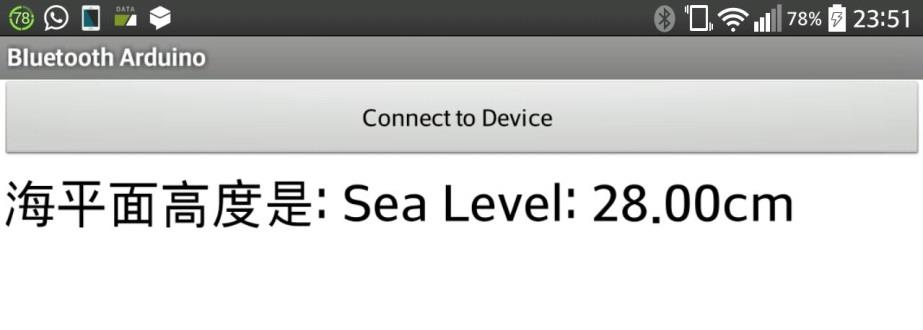 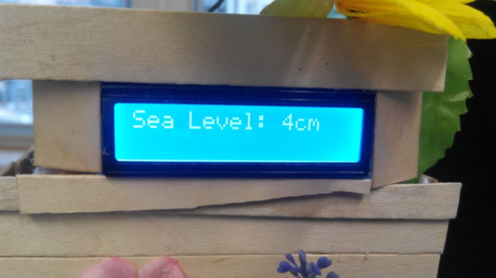 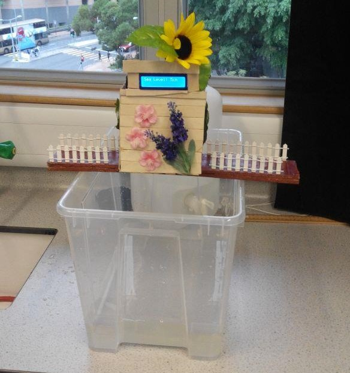 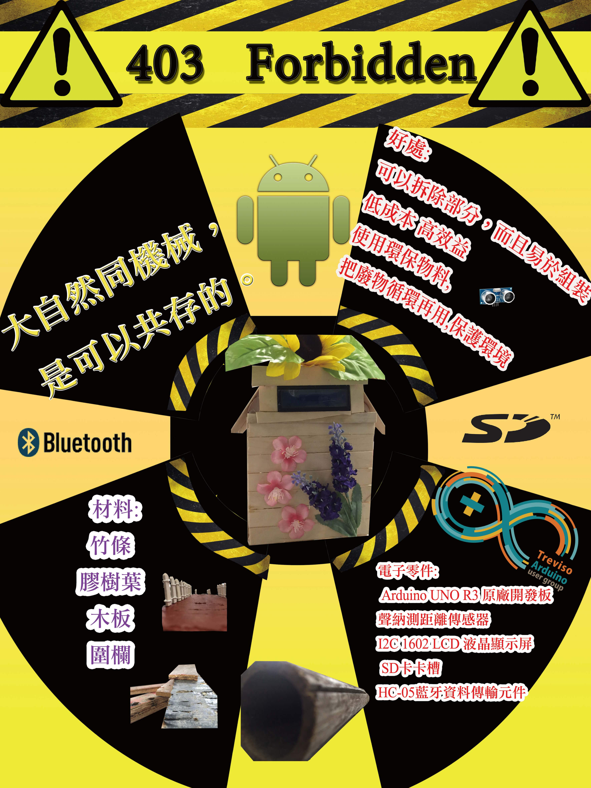Earthquake Detector
Date: 06-05-2017
Programming Language: C
Type: Earthquake Detector Design Competition
This Earthquake Detector is composed of Arduino UNO R3 Microcontroller, MPU6050 Accelerometer, SSD1306 OLED Display, HC-05 Bluetooth Module and LTE12-05 Buzzer.
This detector can be used to measured the type and the magnitude of the earthquake wave. When the device turns on, the accelerometer will keep measure the acceleration continously. When earthquake occurs, there will be a rapid change of the measuring result. When the result exceeds the short term average value, the device will be triggered and the OLED display will show the type of waves (P wave/S wave) and the magnitudes, the buzzer are also triggered to alert the user. Futhermore, the device will send the result to the mobile application by bluetooth module and upload the result to the web server for record.
In order to reduce the occurence of false alarm, our device will first calculate the short term average value by gathering the datas from past 0.5 seconds. If the measured value is higher than the short term average value, the device will regarded it as the real earthquake and the devices will be triggered.
Please view our project report for more details: Project Report
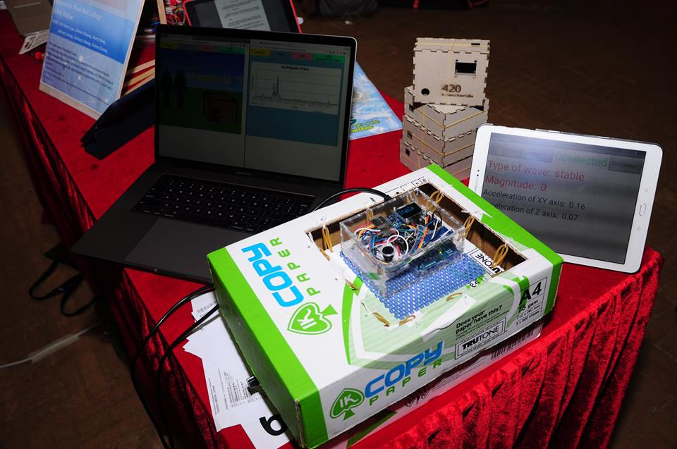 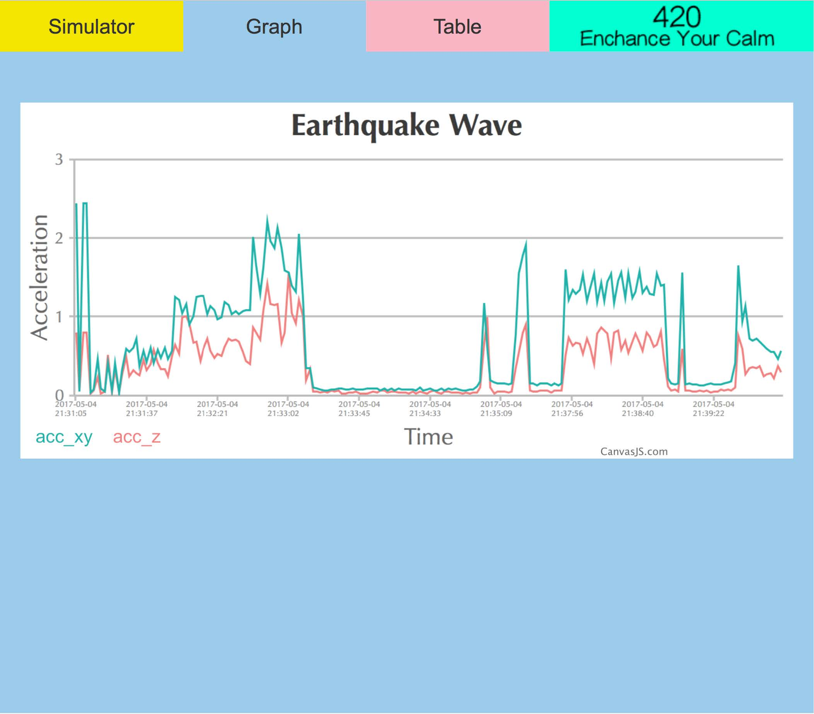
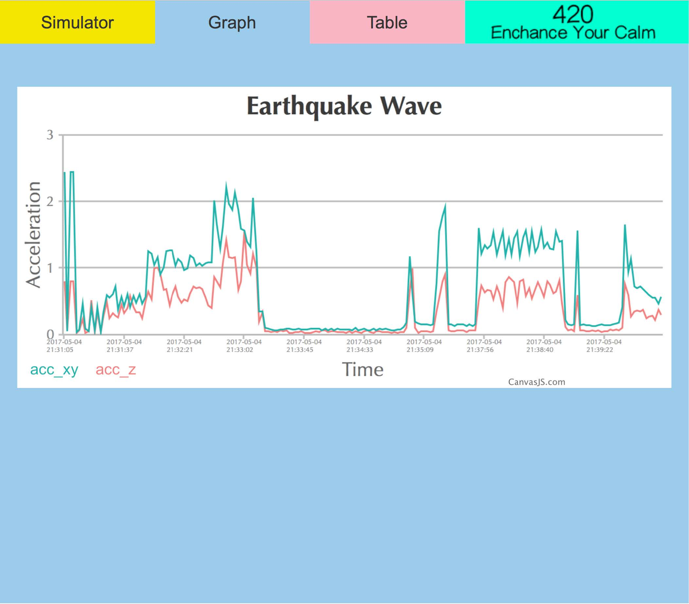

City's Cake Shop Webpage
Date: 05-12-2018
Programming Language: HTML, CSS, Javascript
Type: CityU CS2204 (Fundamentals of Internet Applications Development) Assignment
This webpage allows users to order cakes and view the information such as name, nutrition information and the image of different cakes.
In the home page and order page, users can enter the order information such as telephone number, pick up date and the method to pick up. Then, users can choose the cakes to be ordered in the order page.
When users want to print the invoice. Users can click the "Print Invoice" button to print the invoice out.
Link to the webpage: City's Cake Shop
Buffet Reservation System
Date: 06-12-2019
Programming Language: Java
Type: CityU CS2312 (Problem Solving and Programming) Assignment
This Buffet Reservation System accepts bookings and cancellation of booking. When the customer issue a booking, the customer need to provide his/her name, phone number, total seats needed and the dining date.
When a booking is recorded, the system will set the record status as "pending". The staff-in-charge can check for available tables for the target day, then assign the table(s) for the booking request. The status of the booking will then be changed into an accepted state.
The system can generate listing for both pending and accepted bookings. For pending bookings, "pending" is shown in the listing. For accepted bookings, the codes of the assigned tables are shown.
The system can suggest which table(s) are to be assigned for a booking, based on the number of seats needed by the booking and the available tables.
The system allows undo/redo actions and handles most error cases using Exception handling.
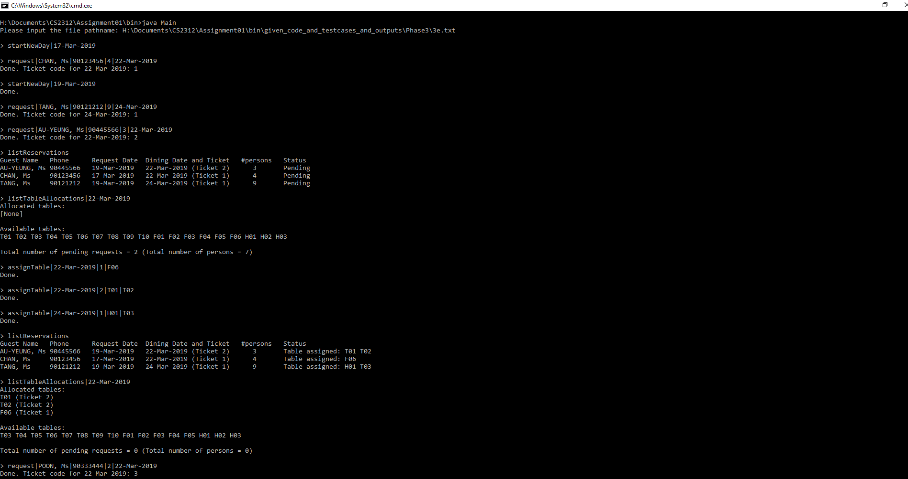 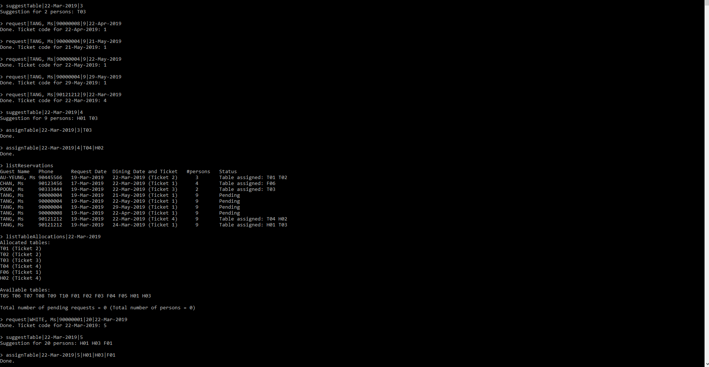 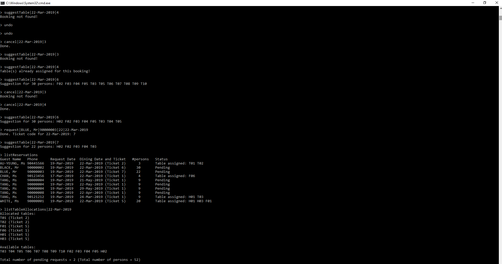
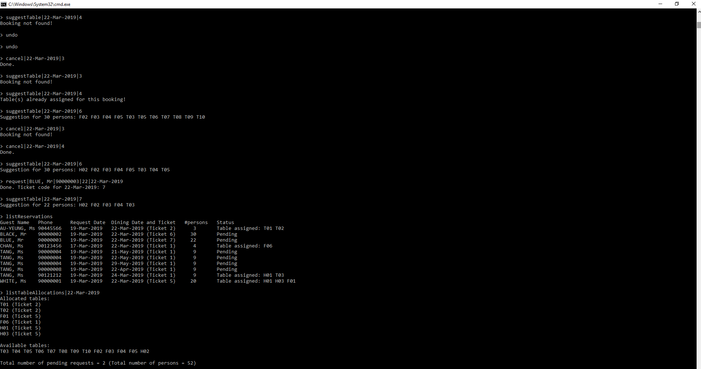
Video Binary Quantization and De-quantization
Date: 17-04-2020
Programming Language: C++
Type: CityU CS3201 (Operating System) Assignment
It is a multi-threaded program which simulate the process of quantization and de-quantization in image/video compression.
After the camera captured the frames with float values between 0 and 1, the frames will be flattened into a one-dimension vector from mxn matrix and loaded into the cache.
Next, the transformer extracts the flattened frames in arrival order from the cache into the temporary frame recorder and then compresses the extracted frame by quantization and de-quantization in place in the temporary frame recorder.
Last, to view the distortion of compression,the estimator calculates the mean squared error between the original frame and the compressed frame and then deletes the original frame from the cache to save space for new frames.
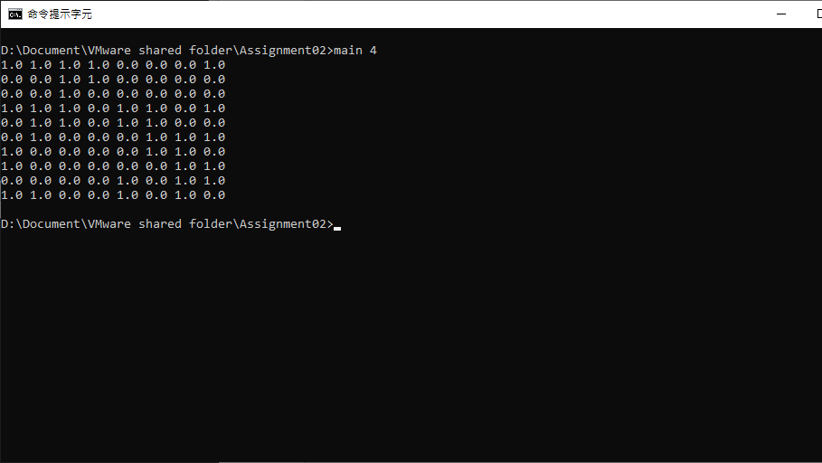 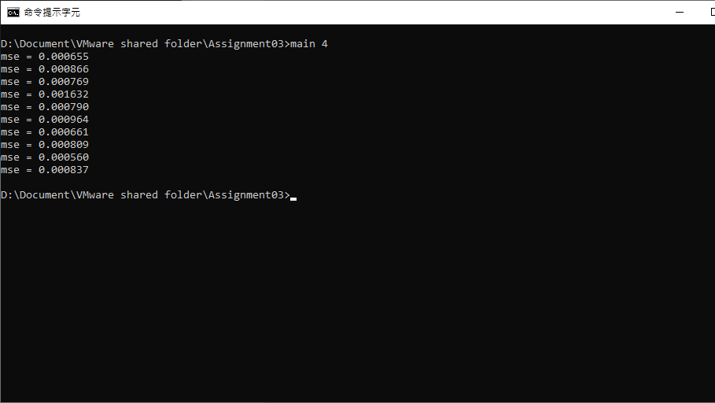Food Delivery Platform
Date: 07-05-2020
Modeling Languages: Unified Modeling Language with the use of Visual Paradigm
Type: CityU CS3342 (Software Design) Group Project
In this project, we have designed the Food Delivery Platform which allows users to order food online and delivered straight to their doorstep. The system included several features:
- Registration: User can register as a customer, restaurant, or a deliverer.
- Browsing and Ordering: Customers can browse the available restaurants and food menu, order food, track order in real-time after placing an order, manage order, and provide feedback to the service and the restaurant.
- Editing: Restaurants can edit their own menu including the food list and prices.
- Management: The system administrator can manage the restaurant list, where restaurants listed on the list can provide food ordering services to the customer by approving restaurant users.
- Delivery: The deliverer is responsible to deliver the order and update his or her real-time status.
We designed the platform by:
- Defining the scope and the requirements using Use Case Diagram
- Design the functions and the platform structure using Class Diagrams and Sequence Diagrams
- Implementing the Software Design Principles, Patterns and Strategies
- Software Prototype
- Documentation